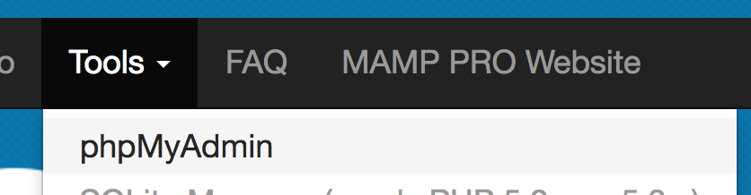
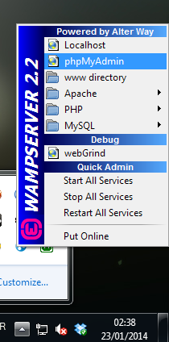
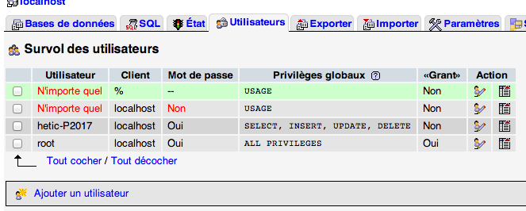
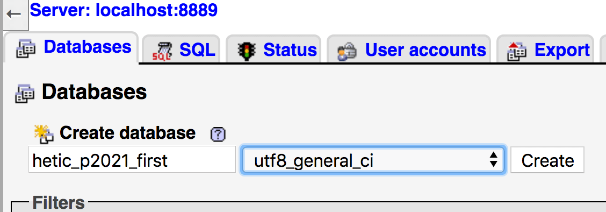
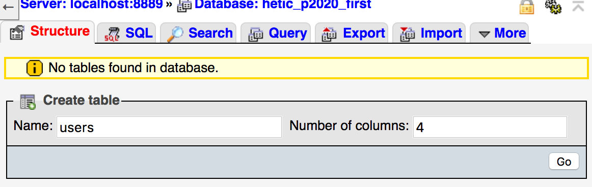
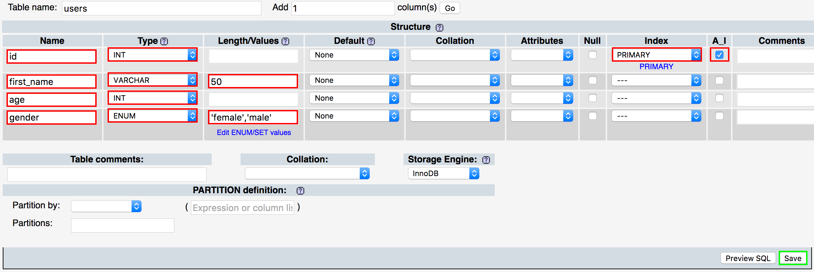
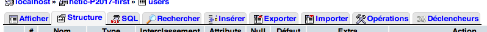
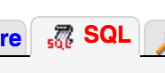

Typiquement, nous allons créer une table par type de données (users, articles, products)

L'ID est presque toujours présent dans chaque table
C'est un nombre qui commence à 1 et qui va s'incrémenter automatiquement à chaque nouvelle ligne
Il permet d'identifier de façon unique chaque ligne
Chaque colonne doit être d'un type particulier
Il en existe plusieurs
Et encore plein d'autres
Pour les colonnes de type text ou varchar, il faut spécifier l'encodage
L'encodage est important à la fois pour sauvegarder certains caractères, mais aussi pour faire des recherches sur la base de donnée
Les plus utilisés sont :
MAMP :

WAMP :

Comme nous sommes en local, nous allons utiliser le compte root
Il est préférable, une fois en ligne, d'utiliser un compte avec moins de droits
Pour rajouter un compte, dans PhpMyAdmin, allez dans l'onglet Utilisateurs puis cliquez sur Ajouter un utilisateur

Créez votre première base de données dans l'onglet Bases de données
Appellez-la comme vous le voulez et choissez utf8_general_ci (lettres et underscores uniquement)

Rentrez dans la base de données (menu de gauche)
Créez une nouvelle table nommée users avec 4 colonnes
Cliquez sur Exécuter

Dans le formulaire qui apparait, chacune des lignes correspond aux colonnes de la base de données
Remplissez-les comme cela :

Essayez :

Lorsque l'on utilise PhpMyAdmin, celui-ci effectue des requêtes SQL
Ce sont des requêtes indiquant à la base de donnée quoi faire (ajoute une donnée, supprime cette ligne, créé une colonne, ...)
Nous allons apprendre à effectuer ces requêtes SQL nous-même
SQL = Structured Query Language
Langage qui permet de communiquer avec la base de données
Nous allons l'utiliser directement dans PhpMyAdmin, mais par la suite nous l'utiliserons directement en PHP
Les principales requêtes SQL sont INSERT INTO, UPDATE, DELETE, SELECT
Cliquez sur le petit icône SQL dans le menu de gauche pour ouvrir une popup

Un champ de texte devrait s'ouvrir. Celui-ci permet de rentrer des requêtes SQL
Ajouter une ligne
INSERT INTO users (first_name, age, gender)
VALUES ('bruno', 27, 'male')
Ajouter plusieurs lignes
INSERT INTO users (first_name, age, gender)
VALUES ('Toto', 22, 'male'), ('Tata', 30, 'female')
Modifier une colonne
UPDATE users SET first_name = 'bueno' WHERE id = 1
Modifier plusieurs colonnes
UPDATE users SET first_name = 'bueno', age = 29 WHERE id = 1
Modifier plusieurs lignes
UPDATE users SET first_name = 'bueno' WHERE id = 1 OR id = 2
Récupérer toutes les lignes
SELECT * FROM users
Récupérer certaines colonnes de toutes les lignes
SELECT id, first_name FROM users
Récupérer certaines lignes
SELECT * FROM users WHERE id < 3
Supprimer une ligne
DELETE FROM users WHERE id = 1
Supprimer toutes les lignes ⚠️
DELETE FROM users
Il faut se connecter à la base de données
L'ancienne méthode :
$db = mysql_connect('localhost', 'user', 'password');
mysql_select_db('database');
Avec PDO
$pdo = new PDO('mysql:dbname=hetic_p2021_first;host=localhost;port=8889', 'root', 'root');
Try ... Catch permet de gérer les erreurs
Si PDO n'arrive pas à se connecter, la fonction catch sera éxecuté
try
{
$pdo = new PDO('mysql:dbname=hetic_p2021_first;host=localhost;port=8889', 'root', 'root');
}
catch(PDOException $e)
{
die('error');
}
Avantages de PDO
Version plus complète
// Connexion variables
define('DB_HOST', 'localhost');
define('DB_PORT', '8889');
define('DB_NAME', 'hetic_p2021_first');
define('DB_USER', 'root');
define('DB_PASS', 'root');
try
{
// Try to connect to database
$pdo = new PDO('mysql:host='.DB_HOST.';dbname='.DB_NAME.';port='.DB_PORT, DB_USER, DB_PASS);
// Set fetch mode to object
$pdo->setAttribute(PDO::ATTR_DEFAULT_FETCH_MODE, PDO::FETCH_OBJ);
}
catch (Exception $e)
{
// Failed to connect
die('Could not connect');
}
// Delete next line if working
die('All good ;)');
Nous avons donc maintenant une variable $pdo qui gère la connexion à la base de données
C'est un objet qui possède plusieurs méthodes permettant d'intéragir avec la base de données
Cette variable aurait pu s'appeler autrement
($db, $connect, ...)
Récupérer des données avec query()
La méthode query() permet de préparer une requête
$query = $pdo->query('SELECT * FROM users');
La requête n'est pas tout de suite executée
Un objet PDOStatement est renvoyé
Cet objet possède des méthodes :
Avec fetchAll()
// Préparation de la requête
$query = $pdo->query('SELECT * FROM users');
// Éxécution de la requête et récupération des données
$users = $query->fetchAll();
// Affichage des données
echo '<pre>';
print_r($users);
echo '</pre>';
Avec fetch() dans un while
// Préparation de la requête
$query = $pdo->query('SELECT * FROM users');
// Boucle exécuté tant que le fetch renvoie quelque chose
while($user = $query->fetch())
{
// Affichage de la donnée
echo '<pre>';
print_r($user);
echo '</pre>';
}
$user correspond à chaque ligne
Arrivée à la fin, fetch() va renvoyer false et le while va donc s'arrêter
Par défaut, PDO renvoie un tableau dans un format étrange
Dans notre exemple, la ligne de code juste après l'initialisation de PDO nous permet de le forcer à renvoyer des objets
$pdo->setAttribute(PDO::ATTR_DEFAULT_FETCH_MODE, PDO::FETCH_OBJ);
Modifier, supprimer et ajouter des données avec exec()
La méthode exec() exécute une requête SQL et renvoie le nombre de lignes affectées
Avant d'écrire une requête SQL dans exec() il est conseillé de la tester directement dans PhpMyAdmin
En PHP, essayez les requêtes suivantes
// Ajoute une ligne dans la table users
$exec = $pdo->exec('INSERT INTO users (first_name, age, gender) VALUES (\'bruno\', 27, \'male\')');
echo '<pre>';
var_dump($exec);
echo '</pre>';
// Met à jour une ligne dans la table users
$exec = $pdo->exec('UPDATE users SET first_name = \'toto\' WHERE id = 2');
echo '<pre>';
var_dump($exec);
echo '</pre>';
Si la requête s'est bien exécutée, elle renvoie le nombre de ligne affectées
Si la requête a échoué, elle renvoie false
Les requêtes SQL deviennent vite trop compliquées comme ci-dessous
$exec = $pdo->exec('INSERT INTO users (first_name, age, gender) VALUES (\''.$data['first_name'].'\', '.$data['age'].', \''.$data['gender'].'\')');
Le mélange PHP/SQL rend trop difficile la distinction des différents éléments dans la requête SQL
La solution : PDO Prepare
// Valeurs
$data = ['first_name' => 'Tommy', 'age' => 30, 'gender' => 'male'];
// Prépare la requête
$prepare = $pdo->prepare('INSERT INTO users (first_name, age, gender) VALUES (:first_name, :age, :gender)');
// Bind les valeurs
$prepare->bindValue(':first_name', $data['first_name']);
$prepare->bindValue(':age', $data['age']);
$prepare->bindValue(':gender', $data['gender']);
// Execute la requête
$exec = $prepare->execute();
Ce n'est pas plus rapide à écrire, mais c'est beaucoup plus clair
$prepare = $pdo->prepare('INSERT INTO users (first_name, age, gender) VALUES (:first_name, :age, :gender)');
/* ... */
La méthode prepare() prépare la requête SQL
Les différentes valeurs sont remplacées par des identifiants avec le signe : devant
/* ... */
$prepare->bindValue(':first_name', $data['first_name']);
$prepare->bindValue(':age', $data['age']);
$prepare->bindValue(':gender', $data['gender']);
/* ... */
La méthode bindValue() sur l'objet renvoyé par prepare() permet d'assigner les valeurs à chaque identifiant
/* ... */
$exec = $prepare->execute();
Il ne reste plus qu'à exécuter la requête avec la méthode execute() sur l'objet renvoyé par prepare()
L'object renvoyé par execute() fonctionne comme l'objet renvoyé par exec() ou par query()
Il est possible de binder les valeurs directement dans le execute() en lui passant un tableau associatif
// Valeurs
$data = ['first_name' => 'Tommy', 'age' => 30, 'gender' => 'male'];
// Prépare la requête
$prepare = $pdo->prepare('INSERT INTO users (first_name, age, gender) VALUES (:first_name, :age, :gender)');
// Execute la requête
$exec = $prepare->execute($data);